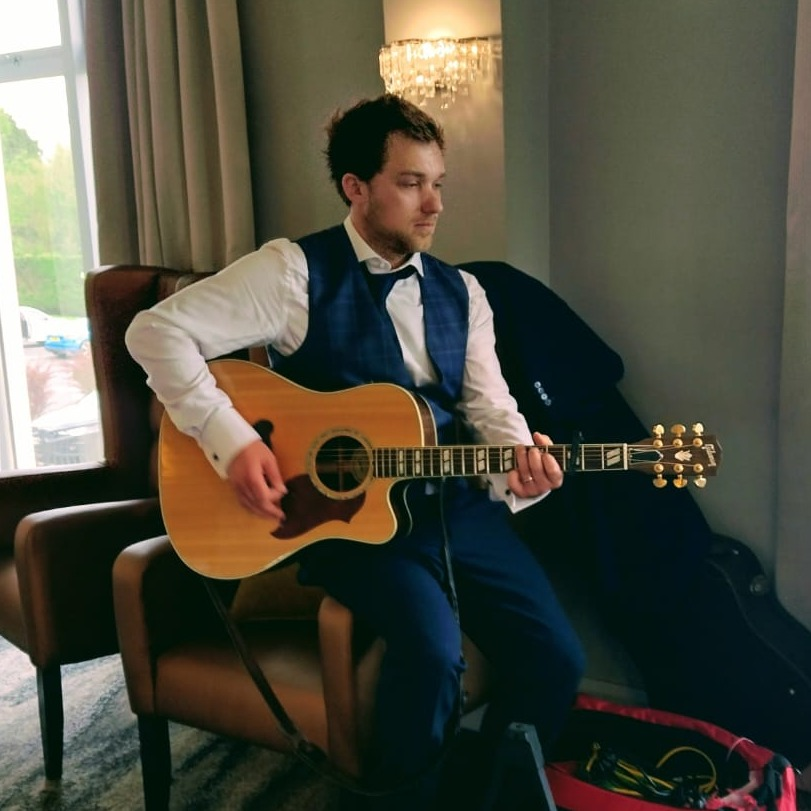

Music Therapist • Belfast & Surrounding Areas

I'm a music therapist based in Belfast, running Birbeck Music across the city and surrounding areas. I hold an MA in Music Therapy from the University of Limerick (2022) and work across care homes, schools, hospitals, and community settings — using music purposefully to support the social, emotional, physical, cognitive, and communication needs of the people I work with.
Growing up in Deal, Kent, Tom played in bands from an early age and went on to complete a BA (Hons) in Popular Music at Falmouth University. Music has always been central to everything.
After moving to Northern Ireland, Tom began working in residential facilities for adults with learning difficulties, learning how to personalise approaches and communication for individual needs. Alongside this he started teaching guitar, bass, ukulele, and music theory under the Birbeck Music name — which went full-time within six months.
Tom completed his MA in Music Therapy at the University of Limerick, working as a trainee alongside experienced practitioners across neuro-rehabilitation, a motor neuron clinic, special schools, care homes, and adult services for learning difficulties and mental health.
University of Limerick — 2022
Clinical placements across acquired brain injury, neurological disorders, special schools, older adults in care homes, adults in day centres, and a motor neuron clinic.
Falmouth University — 2015
Specialisation in performance, composition, and music theory — the foundation of a career in music.
Working as a post-primary counsellor, drawing on music therapy training to support young people's emotional and mental wellbeing.
Delivering group music therapy sessions to care homes and residential facilities across Belfast and the surrounding areas.
Performing in care homes, hospitals, residential facilities, and at weddings — bringing live music to a wide range of settings.
Continuing to teach guitar, bass, ukulele, and music theory to students of all levels through Birbeck Music.
Additional work has included facilitating groups in a bail hostel, 1:1 sessions in a child development clinic, and group and individual sessions in day centres for adults with learning difficulties.
When not working, Tom plays electric guitar, enjoys woodworking, and continues to perform.